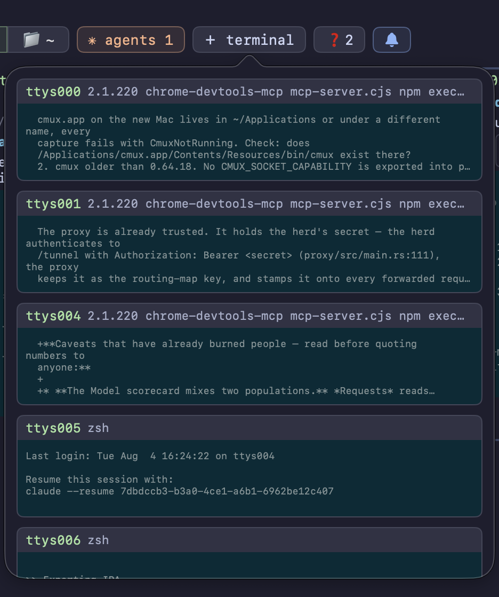
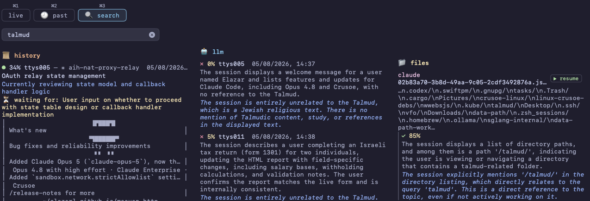
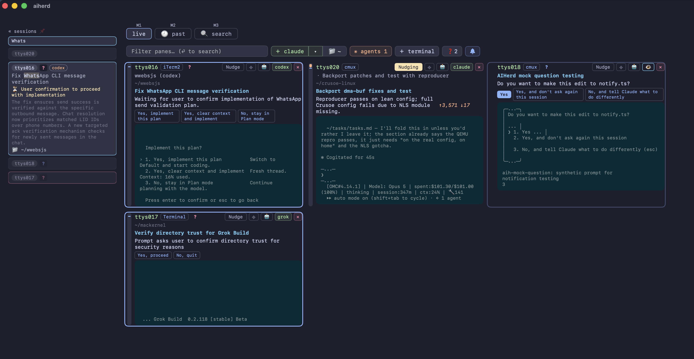
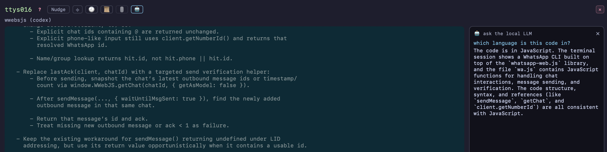
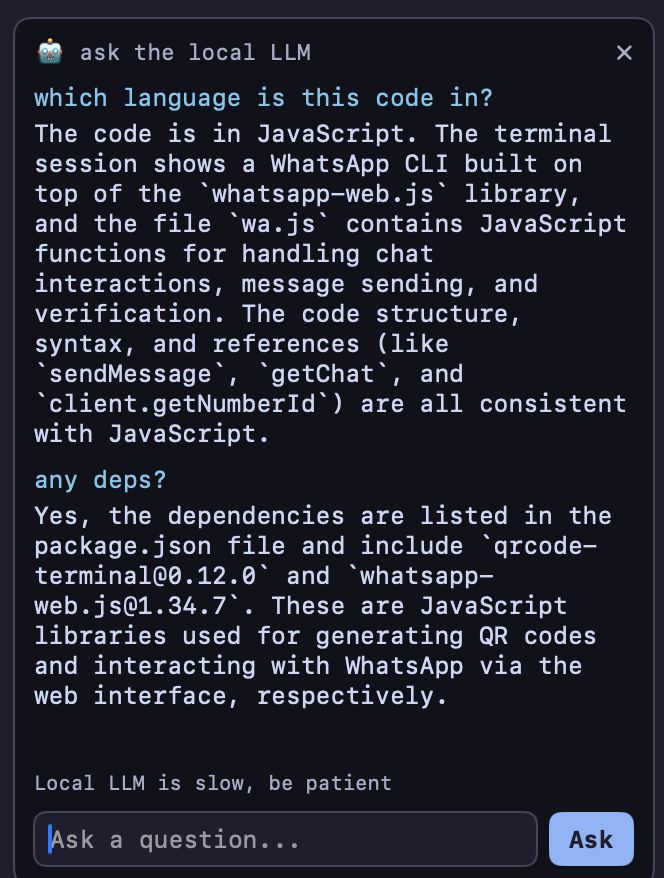
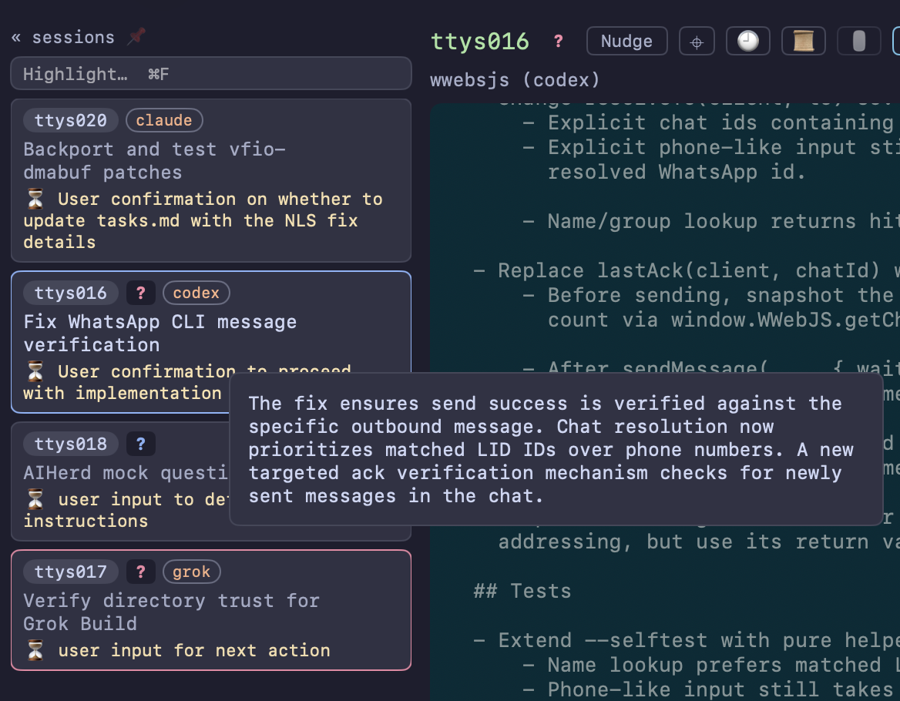
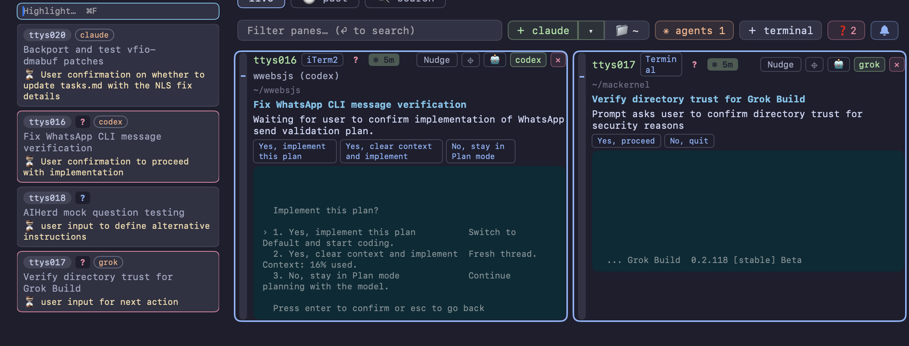
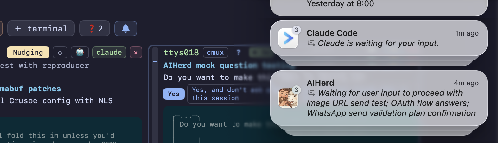

Watch every coding agent in one dashboard
You have six coding agents running in six panes. Five are working and one is blocked on a yes/no question. AIHerd tells you which.
brew install --cask aiherd-dev/aiherd/aiherdmacOS 14 (Sonoma) or newer · Apple Silicon or Intel

What it does
One dashboard over every terminal pane on the machine.
AIHerd watches the PTY devices your terminals are attached to, notices which
ones have a CLI coding agent on them — claude, codex,
agy, grok and a dozen others — and reads what is on
each screen. A small classifier compiled into the binary scores every screen for
"is this waiting on a human?", so a pane that has stopped to ask permission
surfaces immediately instead of sitting unnoticed behind three other windows.
It works across terminal programs: iTerm2, Terminal, Ghostty, tmux and cmux panes, and VS Code's built-in terminal through a bundled extension the app offers to install.
Features
Spots the pane that is waiting on you
An embedded question classifier scores each screen; panes that are blocked
on a prompt are called out. Nothing is sent anywhere — the model ships inside
the aih binary and runs locally.
Filter to the unanswered questions
The ❓ button counts panes waiting on a question nobody has acknowledged, and clicking it hides everything else. Tick a question's ? to mark it read; the next question on that pane counts again.
Mac notifications for new questions
Turn on the 🔔 and every agent that newly stops to ask something raises a macOS notification, so you hear about it without watching the window. Only a fresh question notifies — never one you can already see.
Answer without switching windows
Type a reply, send a keypress, scroll, or click straight into any pane from the dashboard. The pane behaves exactly as if you had focused its terminal and typed there, because that is what happens underneath.
Nudge a stalled agent
Toggle nudging on a pane and AIHerd answers the routine prompts for you, so an agent that would have blocked on a confirmation keeps going.
Plain-language summaries
Once a pane goes quiet, an LLM running in-process writes a
short summary of what happened there. No Python, no uv, no venv:
the model runs inside aih itself, on Metal on Apple Silicon.
Semantic search across every session
Screens are indexed as you work, so you can search months of scrollback by meaning rather than exact string — and jump to the matching point in the stitched history of that pane. The search model is compiled in too.
Search the agents' own transcripts
Claude Code, Codex, OpenCode, pi, grok and Cursor — the CLI agent and the IDE's own chats — each keep every conversation on disk. The 📁 files column greps those directly — including sessions that ended long before AIHerd was watching — and ▶ resumes the one you picked in a new pane, in its original directory.
Every hit opens as a document
A 📁 file, a 📜 history match or a past capture session all open the same reader, parked on the matching line. Agent transcripts render as the conversation they are rather than raw JSONL, ⌘F finds inside them, and the LLM panel answers about the part you are looking at — you pick how much of it the question carries, next to an estimate of how long that takes on your Mac.
A sidebar of every session
One card per pane — topic, summary, what it's waiting on, and where it runs. ⌘F jumps to its filter, which also matches the working directory; misses dim, hits highlight the text that earned them, and the sidebar follows you into a pane's detail view.
Ask about a pane
Open a chat next to any pane and ask the local LLM about what's on it — what the agent did, why it stopped, what the error means. In the app and the browser alike.
Ask the herd
🤖 asks about every pane at once, not just the one you're on. The agent reads the live screens, stitches scrollback and searches past sessions to answer, showing each step as it goes — and asking first if answering means typing into a pane.
Themes and fonts
Settings ▸ Appearance carries six themes, from Catppuccin Mocha to Solarized Light, and separate fonts for the terminal screens and for the interface, each with its own size.
Start new agents from the dashboard
Pick an agent and a working directory and AIHerd opens a pane for it.
Claude Code background sessions
Sessions with no terminal attached never show up in a pane view. AIHerd lists them anyway, counts the live ones on the button, and opens any of them in a real pane when you click it.
Reachable from your phone
By default AIHerd binds only a Unix socket, so it takes no TCP port at all.
Pass -p 8080 and the same dashboard is available in any browser on
your network — or reach it over ssh, with no port open at all.
Devices pair before they get in
A listener on a real network address is gated: a new device shows a 3-digit code, and it only gets a token once you type that code into the dashboard on this Mac — so approving is something only someone at the machine can do. Requests float over whatever screen you're on and raise a notification; Settings lists the paired devices with a revoke button each. A listener can be opened with no PIN instead, but the UNSECURE box asks twice and is fixed once the listener exists.
iPhone and Android apps
Native apps rather than the dashboard in a web view: pane cards with the answer chips, a live pane you can type into, stitched history, search, and a notification when an agent stops to ask something that opens straight on that pane. They reach the herd by direct URL or over an ssh tunnel with a pinned host key. On TestFlight and Play's internal track.
A herd on another machine
🌐 attaches the app to a herd running somewhere else, forwarded over
ssh — the host autocompletes from your ~/.ssh/config, and 🏠/🛰 next to it
switches between that machine and this one in a click. "serve by ssh…" pushes the
other way, publishing this herd onto a remote host; that tunnel lives in the server,
so it outlives the app. aih from-ssh <host> does the same thing headless
and prints a local URL.
Claude Code background sessions
A background session is a full Claude Code conversation that keeps running with no terminal attached. Nothing on a pane-based dashboard can see it — so one sitting blocked on a permission prompt waits indefinitely, in a window that does not exist.

Each row is one session: what it was asked to do, where it is running, how long it has been going, and its state — working, blocked (with what it is blocked on: a permission prompt, a question, a sandbox request), done, failed or stopped.
Hover a row to read its recent output without touching it. Click one and AIHerd opens a pane and attaches it there, so the session you were only watching becomes the session you're in — and it keeps running whether or not you close that pane.
The panes already on your grid are left out of the list, since
those are the sessions you can see. The button only appears when there is a
claude pane to begin with.
Follow any terminal
The grid normally shows panes where AIHerd recognizes a coding agent. The
untracked tab (⌘4) is for everything else: a build script, an
ssh session, a plain shell you want an eye on anyway.

Click a card and that terminal joins the grid, followed like any other pane — screen capture, summaries, semantic search, saved history — even though no known agent runs on it.
The previews are captured server-side when the tab opens, so an idle tab costs nothing. Terminals already on the grid are left out of the list.
Screenshots
One session, three agents, three different terminal programs:
claude in a cmux pane, codex in iTerm2 and
grok in Terminal.

aih serve -p 8080.
The chips along the top are one line per pane, so you can read the state of
every agent at a glance.



/talmud/ path that earned it. ▶ resume reopens that conversation
in a new pane, in the directory it started in.






Mouse support
Wheel and clicks go through to the real terminal, so a pane's own TUI responds as if you were sitting in front of it.
↑ scroll sent badge marks each tick that
went through, and claude's own scrollback moves.This one is terminal-specific. cmux forwards mouse events; iTerm2 and Terminal don't, and AIHerd says so on the button rather than letting you click into nothing. tmux can, but its panes are usually a bare shell where a wheel tick arrives as Escape, so it starts off and one click turns it on. Everything else on this page works the same everywhere.
Usage
Open AIHerd.app and it starts aih serve itself over a Unix
socket. Everything below is for driving it from a terminal instead.
aih # serve on the Unix socket (the default)
aih serve -p 8080 # also serve on a TCP port, for a phone or browser
aih serve claude # only panes running a matching executable
aih find-terminals --no-monitor # print the panes AIHerd can see, and their TTYs
aih from-ssh me@build-box # tunnel that machine's herd to a local URL over sshNarrowing to specific panes
Pass --tty to pin the dashboard to an exact set of panes and
ignore every other terminal on the machine. Useful for a demo or a screenshot,
where you want four known agents on screen and nothing else:
# find the panes you care about
aih find-terminals --no-monitor
# then show only those
aih serve -p 8080 --tty ttys002,ttys004,ttys007,ttys009It takes bare names or /dev/ paths, repeats
(--tty ttys002 --tty ttys004) as well as comma-separated lists, and
overrides pinned panes — so the set you name is exactly the set you get.
The same filter lives in Settings — ⌘, in the app,
the ⚙ in the web toolbar — as a list you add panes to, and it takes effect while
the server runs, no restart.
Everything the dashboard knows, on stdout
Search, summaries and the question list all read the running server over that same Unix socket. So they work while the app is open, take no port, and cost nothing to start — the models are already loaded over there rather than being spun up per command.
aih summaries # what every pane is working on
aih questions # panes waiting on input, with their answer options
aih search "sentry crash" # live screens + history, each with its summary
aih search "sentry crash" --live # only what's on screen right now
aih search "trust prompt" --vector # only stored history, by meaning
aih search "trust prompt" --judge-tty ttys017 # ask the LLM if one pane is relevant, and why
aih summaries --json | jq -r '.[].topic' # --json on any of themPoint any of them at a different server with --url — a socket
path, or http://host:port for one started with -p.
The summarizer
Summaries need Apple Silicon with 16 GB or more. On first use the model
(~2.5 GB) downloads into
~/Library/Application Support/aiherd/models, and the dashboard shows
the progress on the pane that triggered it. Everything else works offline and
without it.
AIHERD_SUMMARIZER | Effect |
|---|---|
off | No LLM at all. |
unsloth/Qwen3-14B-GGUF | A bigger judge. Any Hugging Face GGUF repo works; without a filename, <repo>-Q4_K_M.gguf is assumed. |
unsloth/Qwen3-14B-GGUF:Qwen3-14B-Q5_K_M.gguf | An explicit file in that repo. |
What it installs
| Path | What |
|---|---|
/Applications/AIHerd.app | Native SwiftUI dashboard, universal binary. |
/usr/local/bin/aih | The CLI. |
Uninstall
brew uninstall --cask aiherd # app, CLI and bundled assets
brew uninstall --zap --cask aiherd # also the text index, settings and logsStop hunting for the blocked pane
One command, and every agent on the machine is in one window.
brew install --cask aiherd-dev/aiherd/aiherd